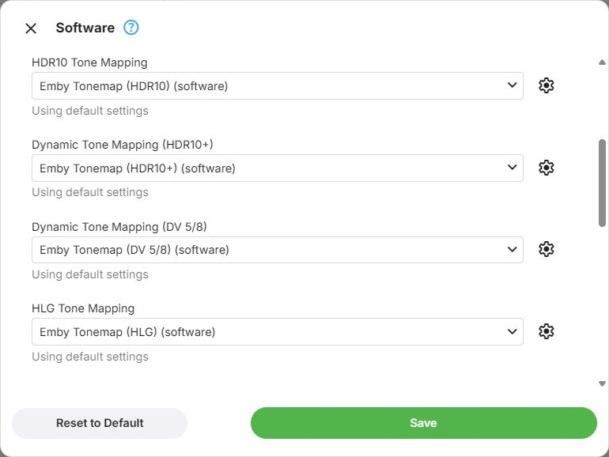
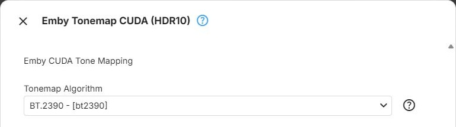

Filters
Filter Parameters
When HDR video has to be transcoded for a display that cannot show HDR, Emby tone maps it to SDR. Which filter does that, and with which settings, is configured per device in the Tone Mapping section of the device's configuration dialog. In Advanced Mode that dialog is opened with Configure on a node - see Device Configuration. In Expert Mode it is the configuration of a GPU Config or Software Config node - see GPU Config. Basic Mode chooses the filters automatically.
The individual filters and their parameters are described in Tone Mapping Filters.
Tone Mapping Selections
There is one selection per kind of HDR:
- HDR10 Tone Mapping - HDR10
- Dynamic Tone Mapping (HDR10+) - HDR10+, using its per-scene metadata. The list offers the filters that use this metadata first, followed by every filter of the HDR10 list. An HDR10 filter chosen here tone maps HDR10+ video as HDR10 and ignores the per-scene metadata
- Dynamic Tone Mapping (DV 5/8) - Dolby Vision profiles 5 and 8. Every filter in this list applies the Dolby Vision metadata
- HLG Tone Mapping - HLG
Each entry names the filter and the kind of HDR it is set up for, such as Emby Tonemap CUDA (HDR10). In the Software configuration, every entry additionally ends in (software).
The first entry of every list is No tone mapping. With it selected, video of that kind is transcoded on this device without tone mapping, and on an SDR display it then looks pale and washed out.
A selection is only shown when the device's context type offers at least one filter for it, and the section is only shown when there is at least one selection.
Below each selection, a line states whether the selected filter is Using default settings or has a Custom configuration:, followed by the values that differ from the defaults. Filters without parameters show no such line.

Filters per Context Type
Which filters are offered depends on the device's context type. Filters with OpenCL in their name are only offered when OpenCL was detected on the device, and Emby Tonemap Vulkan and libplacebo only when Vulkan was detected.
| Context type | HDR10 | HDR10+ | DV 5/8 | HLG |
|---|---|---|---|---|
| Software | Emby Tonemap, Super Tonemap | Emby Tonemap, then the HDR10 list | Emby Tonemap | Emby Tonemap |
| Nvidia CUDA | Emby Tonemap CUDA, Tunemap CUDA | Emby Tonemap CUDA, then the HDR10 list | Emby Tonemap CUDA, Tunemap CUDA | Emby Tonemap CUDA, Tunemap CUDA |
| QSV on D3D11 | Emby Tonemap OpenCL, Tonemap QSV, Extra Tonemap OpenCL, Super Tonemap OpenCL, Tunemap OpenCL | Emby Tonemap OpenCL, then the HDR10 list | Emby Tonemap OpenCL, Tunemap OpenCL | Emby Tonemap OpenCL, Tonemap QSV, Tunemap OpenCL |
| QSV on VAAPI | Emby Tonemap OpenCL, Tonemap QSV, Extra Tonemap OpenCL, Tunemap OpenCL | Emby Tonemap OpenCL, then the HDR10 list | Emby Tonemap OpenCL, Tunemap OpenCL | Emby Tonemap OpenCL, Tonemap QSV, Tunemap OpenCL |
| VAAPI (Intel) | Emby Tonemap OpenCL, Tonemap VAAPI, Extra Tonemap OpenCL, Tunemap OpenCL | Emby Tonemap OpenCL, then the HDR10 list | Emby Tonemap OpenCL, Tunemap OpenCL | Emby Tonemap OpenCL, Tonemap VAAPI, Tunemap OpenCL |
| AMF on D3D11 | Emby Tonemap OpenCL, Tonemap AMF, Tunemap OpenCL | Emby Tonemap OpenCL, then the HDR10 list | Emby Tonemap OpenCL, Tunemap OpenCL | Emby Tonemap OpenCL, Tonemap AMF, Tunemap OpenCL |
| AMF on Vulkan | Emby Tonemap Vulkan, Tonemap AMF, libplacebo | Emby Tonemap Vulkan, libplacebo, then the HDR10 list | Emby Tonemap Vulkan, libplacebo | Emby Tonemap Vulkan, Tonemap AMF, libplacebo |
| Vulkan (Nvidia), Vulkan (Intel), Vulkan (AMD) | Emby Tonemap Vulkan, libplacebo | Emby Tonemap Vulkan, libplacebo, then the HDR10 list | Emby Tonemap Vulkan, libplacebo | Emby Tonemap Vulkan, libplacebo |
| Rockchip | Emby Tonemap OpenCL, Extra Tonemap OpenCL, Tunemap OpenCL | Emby Tonemap OpenCL, then the HDR10 list | Emby Tonemap OpenCL, Tunemap OpenCL | Emby Tonemap OpenCL, Tunemap OpenCL |
VideoToolbox and MediaCodec offer no tone mapping filters, so their configuration has no Tone Mapping section.
Tone mapping on the CPU is demanding, and the effort grows with the output resolution. The Software configuration therefore has a Video Resolution Limit under Software Specific Options, which caps the output resolution whenever software tone mapping is used.
Filter Parameters
The gear button beside a selection opens the parameters of the selected filter. It is disabled for No tone mapping and for filters that have no parameters - see Filters Without Parameters.
The dialog is titled with the filter's name and lists its parameters:
- Dropdown choices show the option's value in square brackets, such as BT.2390 - [bt2390]. The help button beside a dropdown lists every choice with its description
- Number fields may be left empty, which leaves the value to the filter's built-in default. The dialog does not check whether a number is within the range ffmpeg accepts
- Some parameters are only shown for certain choices - Tonemap Parameter, for example, only for the Reinhard and Mobius algorithms
- Reset to Default sets every parameter back to the filter's defaults. These can depend on the kind of HDR - Emby Tonemap, for example, starts with a different algorithm for HDR10+ than for HDR10
- Save keeps the changes; closing the dialog discards them

Only the values that differ from the filter's defaults are stored - see Delta Storage. Every value you have not changed keeps following the default, and setting a value back to its default removes it from what is stored.
Parameters are kept per selection: a filter chosen for HDR10 and the same filter chosen for HDR10+ each have their own settings.
Changed parameters are part of the device configuration: they are only kept when the device dialog is saved as well, and cancelling it discards them together with its other changes. Like every other change, they take effect when the transcoding configuration is saved - see Saving. Reset to Default in the device configuration dialog itself also discards the stored parameters of all encoders and filters of that device.
Image Extraction
The tone mapping for image extraction uses the same four selections, the same No tone mapping entry and the same parameters dialogs. Its lists always offer the Software filters - Emby Tonemap and Super Tonemap - whatever hardware the server has, and the entries do not end in (software). These selections and parameters are stored separately from those of every device, and are saved together with the image extraction settings.
Further Reading
Where Tone Mapping Happens in an Emby Playback Session
What HDR Video Adds to SDR